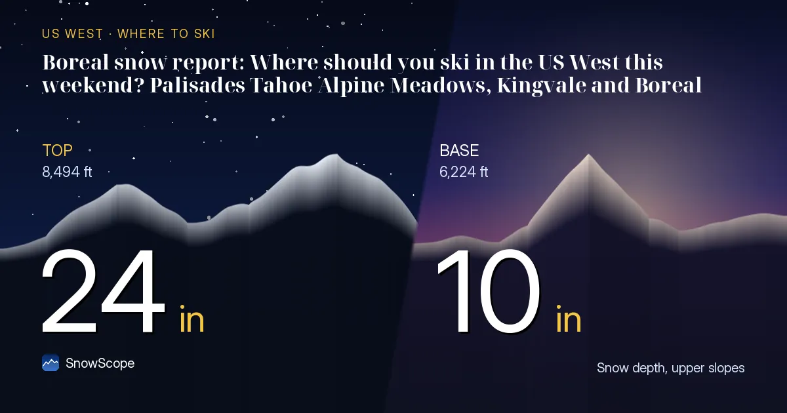
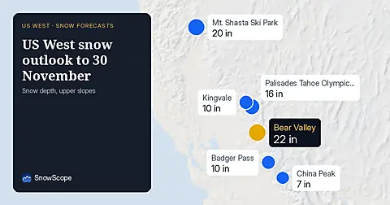

Boreal snow report: Where should you ski in the US West this weekend? Palisades Tahoe Alpine Meadows, Kingvale and Boreal
This weekend, head to Palisades Tahoe Alpine Meadows if you want the deepest snow and the most to come. Kingvale and Boreal are close behind. The three resorts have picked up fresh snow all week, and a big storm arrives Thursday and Friday.
See the live snow forecast for Palisades Tahoe Alpine Meadows in the SnowScope appSnow depth, powder alerts and the 3D map, free.
Three resorts worth your time
Palisades Tahoe Alpine Meadows tops the list with 30 in (75 cm) on its upper slopes today, followed by Kirkwood at 26 in (66 cm) and Boreal at 26 in (65 cm). All three sit well above what this date usually sees: Palisades Tahoe Alpine Meadows normally has just 2 in (6 cm) on 18 November.
The snow came fast: Palisades Tahoe Alpine Meadows added 15 in (39 cm) in the last 72 hours alone. Kingvale picked up 18 in (45 cm), and Boreal 17 in (43 cm). Most of that fell in the past two days, with 7 to 8 in (19–21 cm) arriving just yesterday.
| Resort | Snow depth | New snow, 72 h | Coming, next days | Top |
|---|---|---|---|---|
| Palisades Tahoe Alpine Meadows | 30 in (75 cm) | 15 in (39 cm) | 23 in (59 cm) | 8,494 ft (2,589 m) |
| Kingvale | 23 in (59 cm) | 18 in (45 cm) | 25 in (64 cm) | – |
| Boreal | 26 in (65 cm) | 17 in (43 cm) | 23 in (59 cm) | 7,700 ft (2,347 m) |
| Kirkwood | 26 in (66 cm) | 14 in (36 cm) | 26 in (66 cm) | 9,462 ft (2,884 m) |

What you will find at each elevation
Palisades Tahoe Alpine Meadows shows the clearest split: the top at 8,494 ft (2,589 m) has 24 in (60 cm), mid-mountain at 7,359 ft (2,243 m) holds 17 in (44 cm), and the base at 6,224 ft (1,897 m) has only 10 in (25 cm). Boreal tells a similar story: 22 in (56 cm) at the top (7,700 ft / 2,347 m), 21 in (53 cm) in the middle (7,434 ft / 2,266 m) and 19 in (49 cm) at the base (7,172 ft / 2,186 m). Ski high and you stay on snow; drop low and you will find thinner coverage.
On 18 November, the freezing level at Palisades Tahoe Alpine Meadows ranges from 3,215 ft (980 m) to 6,496 ft (1,980 m). That means wet snow will touch the lower runs by afternoon, while the upper mountain holds dry, wintry conditions. At Boreal, the freezing level is slightly higher, from 3,350 ft (1,020 m) to 5,970 ft (1,820 m). Plan your morning runs to catch the best snow before it softens.
How this compares with other years
Palisades Tahoe Alpine Meadows has more snow on this date than 42 of the past 46 winters. That depth usually arrives in early March or mid-March, so a mid-November blanket like this is rare. The first weeks of the season matter most for lower and middle-altitude terrain, which can wait months for this much coverage elsewhere.
Boreal sits at 58 cm on its mid-slopes today, also ahead of the typical November picture. This early richness means more runs open sooner and lighter crowds on skiable terrain.
What the forecast brings
Thursday and Friday will bring the biggest dumps: 18 in (45 cm) on Thursday at Palisades Tahoe Alpine Meadows and 16 in (40 cm) on Friday. Kingvale will see 19 in (49 cm) on Thursday and Boreal 18 in (46 cm). By Saturday morning, all three will have gained roughly 23–25 in (59–64 cm) from now.
The outlook beyond the weekend stays strong. Over the next seven days, Palisades Tahoe Alpine Meadows will accumulate 46 in (117 cm) at the top and 43 in (110 cm) at mid-mountain. Boreal will pick up 48 in (123 cm) at mid-slopes. Forecasts shift, so check the map again the day before you go.
What to watch for on the hill
Early-season snow is still thin in places. Rocks and grass hide just below the surface on many runs, especially on lower slopes and southern aspects. Stick to marked, groomed terrain and avoid the edges where cover is sparse.
North-facing slopes and high ridges hold their snow longest. The sun will work fast on south-facing terrain by mid-morning, so plan your runs accordingly. If you are thinking of leaving the piste, check the official avalanche bulletin at avalanche.org first. Today it shows level 2 (moderate) danger in the Palisades Tahoe Alpine Meadows area.
Before you book
Snow on the map does not mean the lifts are running. Check each resort's website for opening dates and which lifts are spinning; this weekend is still early in the season. Some resorts open terrain in phases as they confirm snow depth and get ready.
Get a powder alert in the SnowScope app to know when any of these three gets fresh snow, so you can plan your trips around the storms.
Tips for skiers
- Ski above 7,400 ft (2,250 m) this weekend to avoid wet snow lower down caused by the freezing level. The upper mountain will stay dry and wintry longest.
- North-facing slopes hold their cover; south-facing runs soften by afternoon. Ride shady terrain in the morning, then follow the shade as the sun moves.
- Early-season snow often sits on rocks and sparse grass. Stay on open pistes and groomers; off-piste terrain is risky until depth is real.
- Fresh snow is coming Thursday and Friday. If you can delay your trip to Friday or Saturday, the snow cover will be thicker and safer.
- Before you go off-piste or tour, read the official avalanche bulletin at avalanche.org (US national portal). Today's danger level is 2 (moderate).
About these numbers
Resort snow depths are the deepest snow on the resort's upper slopes on the date shown; they are estimates for an area, not a measurement at one point. Forecasts can change. Always read the official avalanche bulletin before going off-piste.
Official avalanche bulletins: avalanche.org (US national portal)
Cite this report
For research, teaching or the press: the numbers and charts are free to reuse under CC BY 4.0 with this citation.
SnowScope (2026), Boreal snow report: Where should you ski in the US West this weekend? Palisades Tahoe Alpine Meadows, Kingvale and Boreal, https://snowscope.app/blog/en/2026/11/us-west-where-to-ski-this-weekend-18-november-2026.html, accessed 2026-11-18
SnowScope (Atlas Labs). (2026, November 18). Boreal snow report: Where should you ski in the US West this weekend? Palisades Tahoe Alpine Meadows, Kingvale and Boreal. SnowScope snow reports. https://snowscope.app/blog/en/2026/11/us-west-where-to-ski-this-weekend-18-november-2026.html
BibTeX
@misc{snowscope2026uswestwheretoskithisweek,
author = {{SnowScope (Atlas Labs)}},
title = {Boreal snow report: Where should you ski in the US West this weekend? Palisades Tahoe Alpine Meadows, Kingvale and Boreal},
year = {2026},
month = nov,
howpublished = {\url{https://snowscope.app/blog/en/2026/11/us-west-where-to-ski-this-weekend-18-november-2026.html}},
note = {Published 2026-11-18 17:33 UTC; accessed 2026-11-18}
}· CC BY 4.0 · Methods, data and tools →
Palisades Tahoe Alpine Meadows: snow and temperature by height, this winter vs last (tools) →
Follow Palisades Tahoe Alpine Meadows
Free: a message when fresh snow is coming, and the forecast every morning.
More snow reports

The two-week picture in the US West, 17 November to 30 November, drawn from the two forecasts that reach two weeks, ECMWF and GFS. Middle of the …

Kirkwood leads the US West with 109 cm on upper slopes as of 21 November. Early-season snow depth guide for skiers.

Mt. Shasta Ski Park's upper slopes hold 20 cm (2026-11-13), but the base is bare with rain below 2020 m. Next: 32 cm forecast.